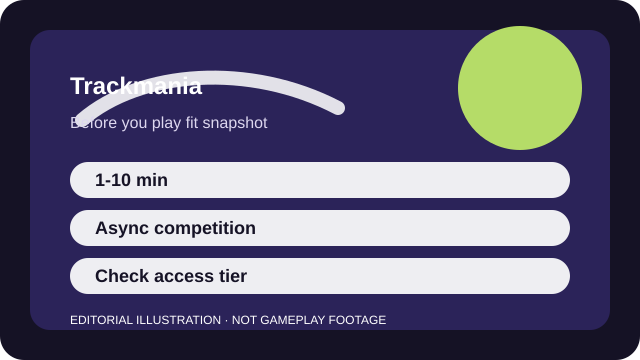

BEFORE YOU PLAY
What this page is and is not
This is a sourced editorial fit profile. It is designed to help with a yes-or-no play decision, and it does not claim a scored hands-on review.
If repeating the same corner twenty times sounds satisfying, the fit is strong. If that sounds tedious, the game's brilliance may never surface no matter how slick the interface feels.
The first-session loop to judge is simple: Run a short track, restart instantly, and shave time off through cleaner lines and better surface control.
The durable hook is self-improvement and track mastery more than account power.

FIT SNAPSHOT
Trackmania at a glance
| Genre | Time-trial racing |
|---|---|
| Platforms | PC, PlayStation, Xbox |
| Business model | Free-entry racing game with official access tiers that should be checked before you commit long-term. |
| Typical session | 1-10 minute runs with instant restarts and easy stop points. |
| Play style | asynchronous precision racing |
| Learning barrier | Driving is simple to start, but advanced surfaces and speed techniques create a higher ceiling than the first track suggests. |
| Social shape | Most of the competition is asynchronous through ghosts and leaderboards, with optional live rooms layered on top. |
WHO IT FITS
Best fit, likely friction, and the social reality
players who enjoy shaving seconds off a time and learning one track more efficiently each day
players who need door-to-door racing chaos or heavy progression rewards
Most of the competition is asynchronous through ghosts and leaderboards, with optional live rooms layered on top.
The durable hook is self-improvement and track mastery more than account power.
FIRST SESSION PLAN
How to test the fit in one evening
- Pick one daily or campaign track and stay with it long enough to learn why restarts feel good here.
- Run without ghosts first so your own baseline is readable.
- Use instant restarts freely instead of finishing messy runs out of habit.
- Judge the fit by whether repetition feels satisfying, not by your leaderboard position on night one.
Use the first session to answer these fit questions instead of judging rank, win rate, or store value immediately.
- Do you enjoy repetition with clear measurable improvement?
- Is asynchronous leaderboard pressure enough social energy for you?
- Will official access tiers feel fair for the time you plan to spend?
TIME, COST, AND COMMITMENT
What you are really signing up for
| Session budget | 1-10 minute runs with instant restarts and easy stop points. |
|---|---|
| Social demand | Most of the competition is asynchronous through ghosts and leaderboards, with optional live rooms layered on top. |
| Progression shape | The durable hook is self-improvement and track mastery more than account power. |
| Spending pressure | Access tiers and club features can matter, so the current official offering is worth checking before you assume the long-term value. |
Trackmania is one of the easiest precision games to fit around real life because you can stop after one clean run or vanish into iteration for an hour.
Access tiers and club features can matter, so the current official offering is worth checking before you assume the long-term value.
SOURCES AND LIMITS
What was checked, and what can change
- Campaign tracks and featured events rotate regularly.
- Access tiers or club features may change how much long-term value you see.
- Community map visibility can alter how social the experience feels beyond the basics.
This profile uses official game pages and defensible general product knowledge to frame the player fit. It does not claim live testing across every platform, accessibility need, or current event rotation.